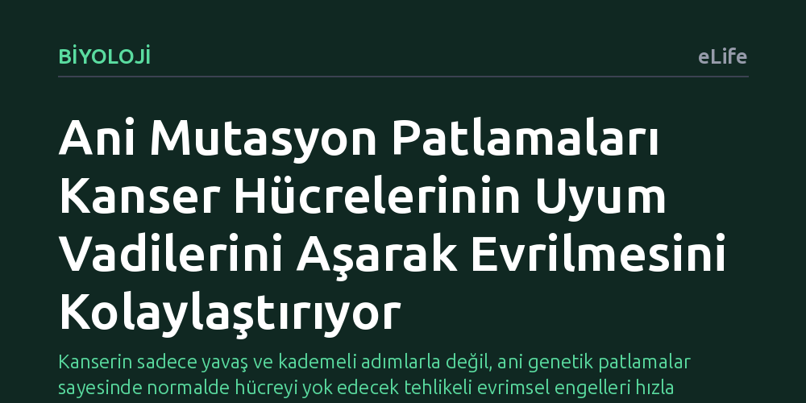

BIYOLOJI · eLife · 2026-10-11
Araştırmacılar, kanserdeki ani mutasyon patlamalarının tümör hücrelerinin evrimsel adaptasyonunu nasıl etkilediğini inceledi. Bulgular, bu sıçramalı mutasyonların tek tek zararlı ancak birlikte faydalı olan ara basamakları aşmayı kolaylaştırarak kanser evrimini hızlandırdığını gösterdi.
Kanserin sadece yavaş ve kademeli adımlarla değil, ani genetik patlamalar sayesinde normalde hücreyi yok edecek tehlikeli evrimsel engelleri hızla atlayabildiğini gösteriyor.

Kanser hücreleri geleneksel olarak nesiller boyunca yavaş yavaş DNA hatası biriktiren ve bu sayede adım adım gelişen yapılar olarak düşünülür. Ancak son araştırmalar, kanser genomundaki değişimlerin her zaman pürüzsüz ve kademeli bir seyir izlemediğini; aksine ani ve kesintili patlamalar halinde meydana gelebildiğini gösteriyor. Bu durum, tümörlerin zorlu biyolojik koşullara ve tedavilere nasıl beklenmedik bir hızla uyum sağlayabildiği sorusunu gündeme getiriyor.
Asıl evrimsel düğüm, hayatta kalmak için birden fazla mutasyonun aynı anda gerektiği durumlarda ortaya çıkıyor. Biyolojide 'uyum vadisi' olarak adlandırılan bu senaryoda, tek başına ortaya çıkan bir mutasyon hücre için zararlıyken, ancak ikinci bir mutasyonla birleştiğinde büyük bir avantaja dönüşür. Tek tek oluştuklarında hücreyi ölüme sürükleyen bu tehlikeli ara basamakların kanser hücreleri tarafından nasıl aşılabildiği bugüne kadar tam olarak anlaşılamamıştı.
Araştırmacılar bu soruyu aydınlatmak için evrimsel popülasyon genetiği modelleri ile gerçek hasta verilerini bir araya getirdi. İlk aşamada, mutasyonların düzenli aralıklarla değil de ani patlamalar halinde ortaya çıktığı durumları simüle eden matematiksel modeller geliştirdiler. Bu modeller, hücrelerin zararlı ara mutasyonları taşıdıkları süre boyunca yok olmadan avantajlı nihai hedefe ulaşıp ulaşamayacağını hesapladı.
Elde edilen teorik sonuçlar, The Cancer Genome Atlas (TCGA) veri tabanında yer alan insan tümörlerine ait genom dizileme verileriyle karşılaştırıldı. İncelemede özellikle insan hücrelerinde dönemsel patlamalar halinde mutasyon yarattığı bilinen APOBEC enzim ailesinin bıraktığı genetik izlere odaklanıldı. Bu izleri taşıyan tümörlerin genomik kalıpları incelenerek uyum vadilerini aşma dinamikleri değerlendirildi.
Çalışmanın temel bulgusu, ani mutasyon patlamalarının tümör hücrelerinin evrimsel uyum vadilerini geçmesini belirgin ölçüde kolaylaştırdığını ortaya koydu. Kademeli bir mutasyon sürecinde, ilk zararlı mutasyonu edinen bir hücre doğal seçilim tarafından hızla elenir. Ancak mutasyonlar ani bir patlama halinde arka arkaya geldiğinde, hücre bu tehlikeli ara basamakta uzun süre takılmadan doğrudan avantaj sağlayan tepe noktasına ulaşabiliyor.
TCGA verilerinden elde edilen bulgular da bu matematiksel mekanizmayı doğruladı. APOBEC enziminin yol açtığı kesintili mutasyon izlerini taşıyan tümörlerin, çok adımlı uyum vadilerini aşmayı gerektiren genetik kalıpları anlamlı derecede daha yüksek oranlarda sergilediği saptandı. Ayrıca çalışma, bu hızlı uyum yeteneğinin tümör içindeki farklı hücre soylarının birbiriyle rekabetiyle nasıl dengelendiğini de gösterdi.
Bu sonuçlar, kanserin evrimsel direncine ve karmaşıklığına dair anlayışımızı önemli ölçüde derinleştiriyor. Tümörlerin tedaviye direnç geliştirmesi veya yayılması gibi karmaşık süreçler, yalnızca yıllarca süren yavaş değişimlerle değil, kısa süreli genetik fırtınalarla zorlu engellerin bir çırpıda atlanmasıyla da gerçekleşebiliyor. Bu mekanizma, kanserin stabil bir seyirden aniden agresif bir evreye nasıl geçebildiğine mantıksal bir açıklama getiriyor.
Öte yandan bu araştırma doğrudan yeni bir tedavi yöntemi sunmaktan ziyade, kanser evriminin temel kurallarını aydınlatıyor. Uyum vadilerinin nasıl aşıldığının bilinmesi, gelecekte tümörlerin tedavi baskısı altında hangi evrimsel yolları tercih edeceğini daha isabetli tahmin etmeye katkı sağlayabilir.